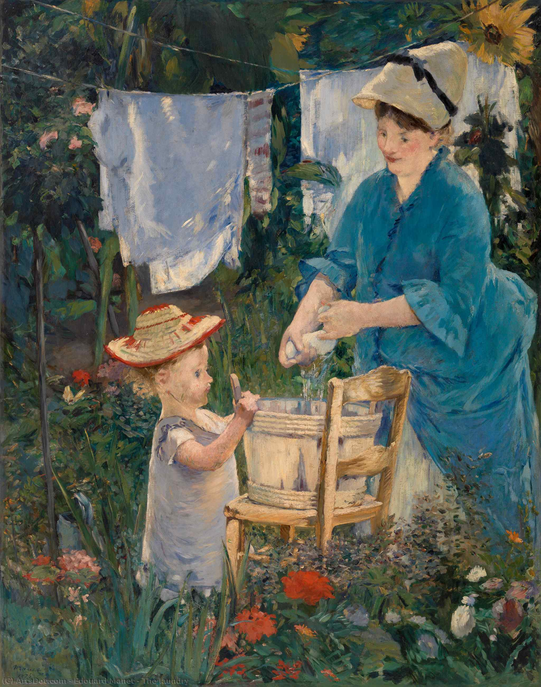

Édouard Manet
Édouard Manet è stato un pittore francese, uno dei primi artisti del XIX secolo a dipingere la vita moderna, fu considerato il maggiore interprete della pittura pre-impressionista e fondamentale nella transizione dal realismo.
